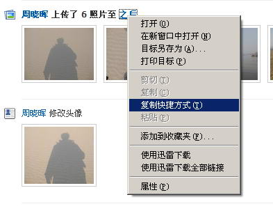
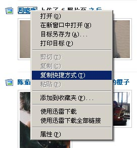
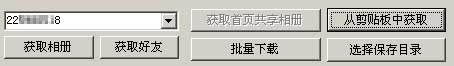
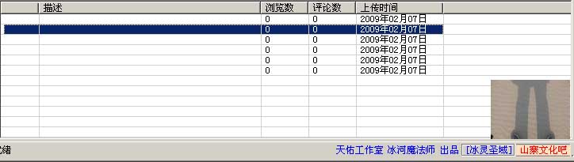
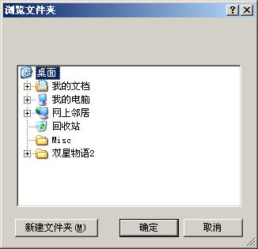
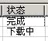
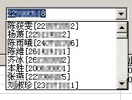
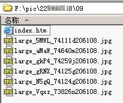

|
校内相册批量下载器V1.11 BUILD0512 针对校内网开发的相册下载器 特点： 2009年5月12日更新内容： 2009年5月10日更新内容： 2009年4月29日更新内容： 下载地址：downloader.rar |
|
校内相册批量下载器 使用说明 最近有不少人来询问我这个软件的具体使用方法，可能有些方面的确做得不够直接。所以能主要对该软件的基本操作做个说明： 1、登录，这个不用我说了，.net的程序，源代码都很容易查看，害怕我盗号的同学自己看看源代码确认一下吧。另外，用户名不是由我的程序记住的，而是IE记住的，如果不想的话，就把IE的cookie关了。
2、下载相册，首先在校内网上把自己心仪的相册的地址复制下来，当然也可以复制用户名则可以查看该用户的所有相册，如下图：   3、点击 从剪贴板中获取，如果为相册则直接进入列表，若为用户，则放入左侧框中。（注：校内中还有不少地方均可直接复制粘贴）  若为用户，当左侧框出现用户ID号后，点击 获取相册，即可将该用户所有相册放入下载列表。
注意：下载列表支持右键进行简单的去除功能。 4、查看缩略图，双击该列表中某一项，下方框中会出现该相册的所有相片，双击某项，即可查看该图缩略图。  5、批量下载，点击右上角的 批量下载 即可开始批量下载上方列表中的项目。开始之前需要选择保存目录。  各种状态如图所示：  6、点击 获取好友列表，可以轻松的获取所有好友的列表，并可以点击获取相册获取该好友的所有相册。  7、文件目录结构，每个相册目录中都含有一个index.htm文件，可以像相册一样打开查看所有图片。  最后，感谢各位查看，也感谢各位的支持，也欢迎提出改进意见和建议。
|